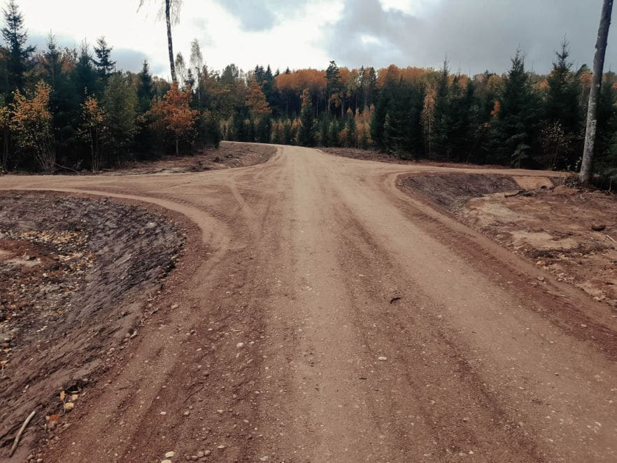
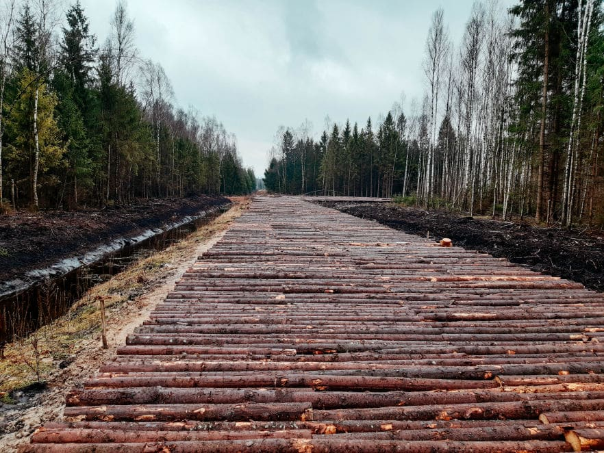
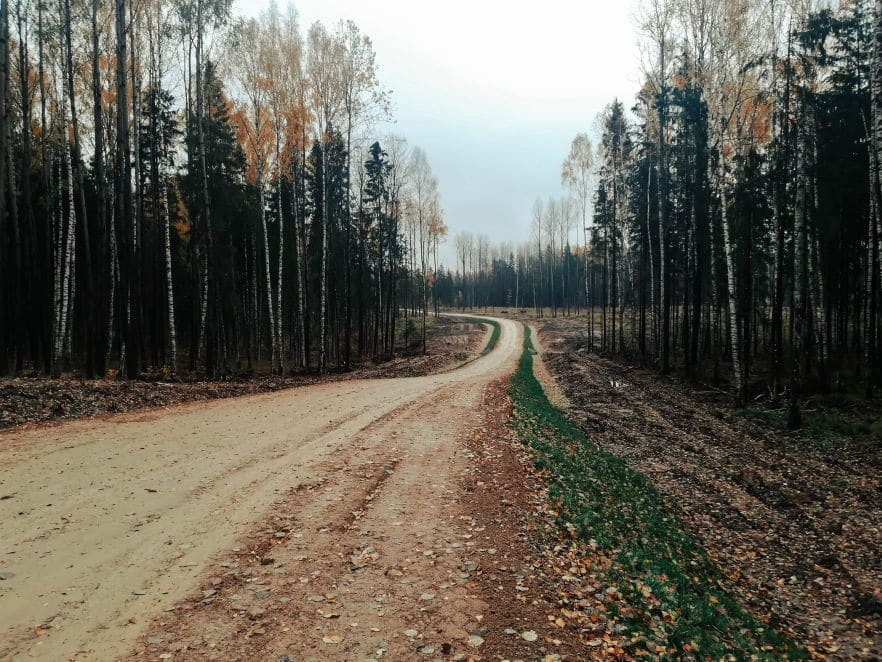

2020 · Priekules novads · AS “Latvijas valsts meži”
Kurzemnieku ceļš
2,307 kmkopgarums
13 000 m²brauktuves platība
Būvniecības laiks: 08.2020–10.2020
Meža autoceļi, kas uzbūvēti AS “Latvijas valsts meži” vajadzībām. Kopumā esam uzbūvējuši vairāk nekā 300 km meža autoceļu.

2020 · Priekules novads · AS “Latvijas valsts meži”
2,307 kmkopgarums
13 000 m²brauktuves platība
Būvniecības laiks: 08.2020–10.2020

2020 · Bauskas novads · AS “Latvijas valsts meži”
0,700 kmkopgarums, uz baļķu klājuma
5167 m²brauktuves platība
Būvniecības laiks: 12.2019–09.2020

2019 · Brocēnu novads · AS “Latvijas valsts meži”
1,689 kmkopgarums
10 308 m²brauktuves platība
Būvniecības laiks: 09.2019–01.2020